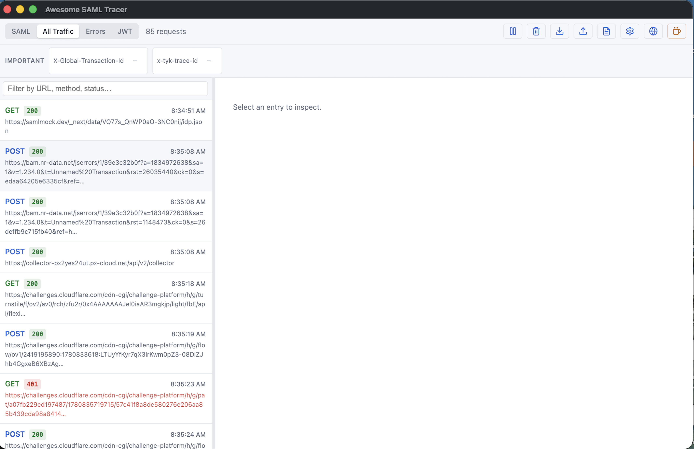
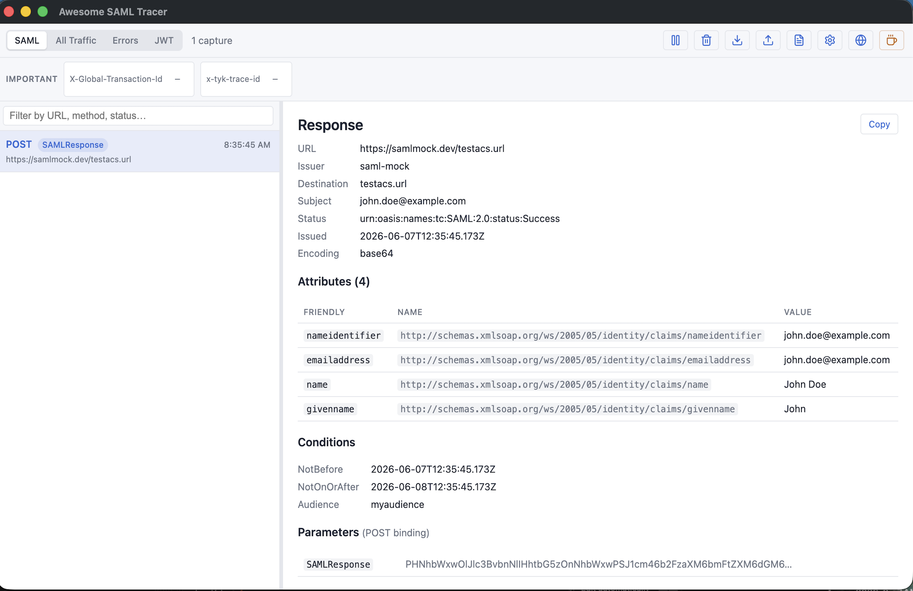
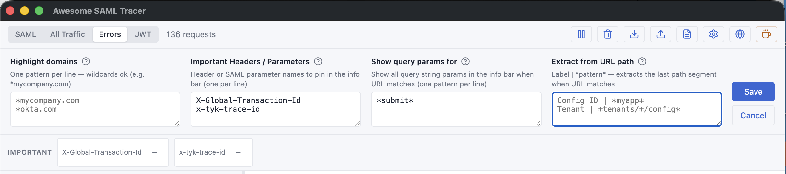

Debug SAML SSO without the headache
Capture, decode and share SAML single sign-on traffic — right inside Chrome.

Capture, decode and share SAML single sign-on traffic — right inside Chrome.

Why you'll like it
Awesome SAML Tracer watches your browser's network traffic, decodes every SAML message in real time, and makes it effortless to share what you find.
SAMLRequest and SAMLResponse messages appear the moment they happen — fully decoded with issuer, destination, subject, conditions and a clean attributes table.
Paste any token to split it into header, payload and signature, with a Highlights panel that surfaces issuer, audience, expiry and whether it's expired.
Switch between SAML-only, All Traffic, Errors (4xx/5xx) and the JWT decoder. A live search bar filters by URL, method or status.
Generate a self-contained HTML report, copy a decoded entry as plain text, or export structured JSON — perfect for support tickets.
Import and export the same JSON format as the original SAML-tracer extension, so captures move freely between tools and teammates.
Everything stays on your device using Chrome's local storage. No servers, no analytics, no tracking — nothing is ever transmitted.
A closer look
No more squinting at base64. Select any capture and the detail pane lays out the decoded message — kind, issuer, destination, subject, status, conditions — with attributes shown by friendly name, full URN and value.

Highlight your IdP and SP domains with a gold star, pin the headers and parameters you care about into a copy-ready info bar, and extract tenant or config IDs straight out of URL paths.

Coming from SAML-tracer?
Awesome SAML Tracer keeps what worked about the original SAML-tracer and adds the things you always wished it had.
| Capability | Original SAML-tracer | Awesome SAML Tracer |
|---|---|---|
| Decodes SAML messages | Yes | Yes |
| Friendly-name attribute table | Raw only | Yes |
| Built-in JWT decoder | — | Yes |
| Self-contained HTML reports | — | Yes |
| Errors-only view | — | Yes |
| Domain highlighting & pinned headers | — | Yes |
| JSON import / export | Yes | Yes (same format) |
| Manifest V3 & DevTools panel | Legacy | Yes |
Exports use the SAML-tracer JSON format, so files open in either extension.
Privacy first
Awesome SAML Tracer captures traffic locally and stores it with Chrome's own storage APIs. There are no servers, no analytics and no third-party services — the developer can't see your captures, and neither can anyone else.
Install in seconds. Pin it to your toolbar. Trigger a login and watch the SAML messages decode themselves.